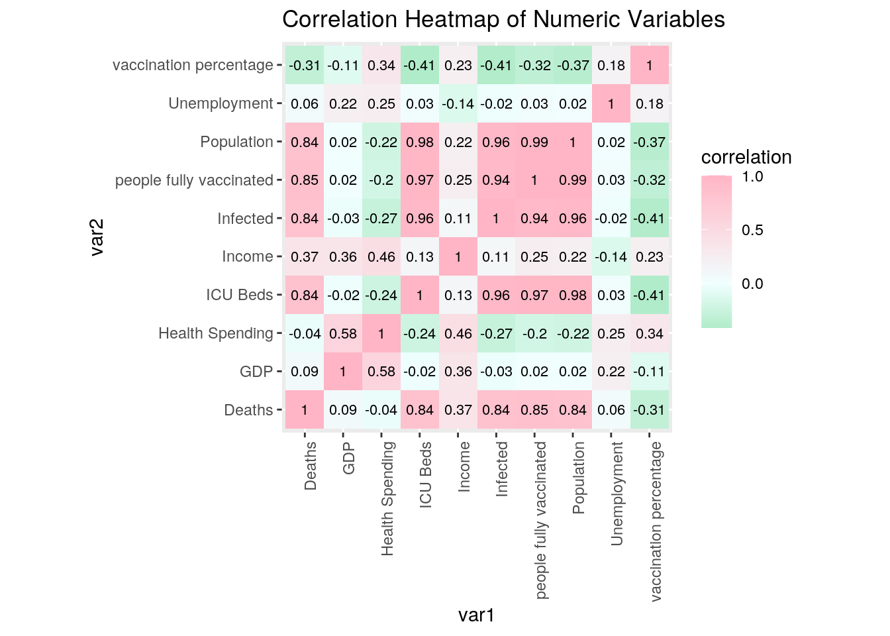
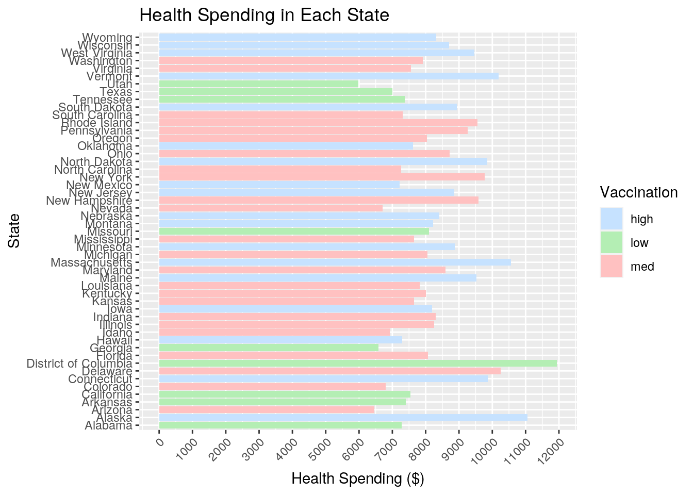
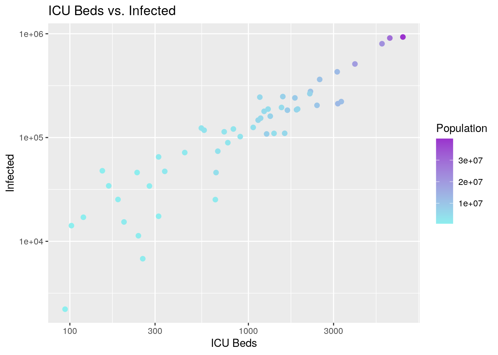
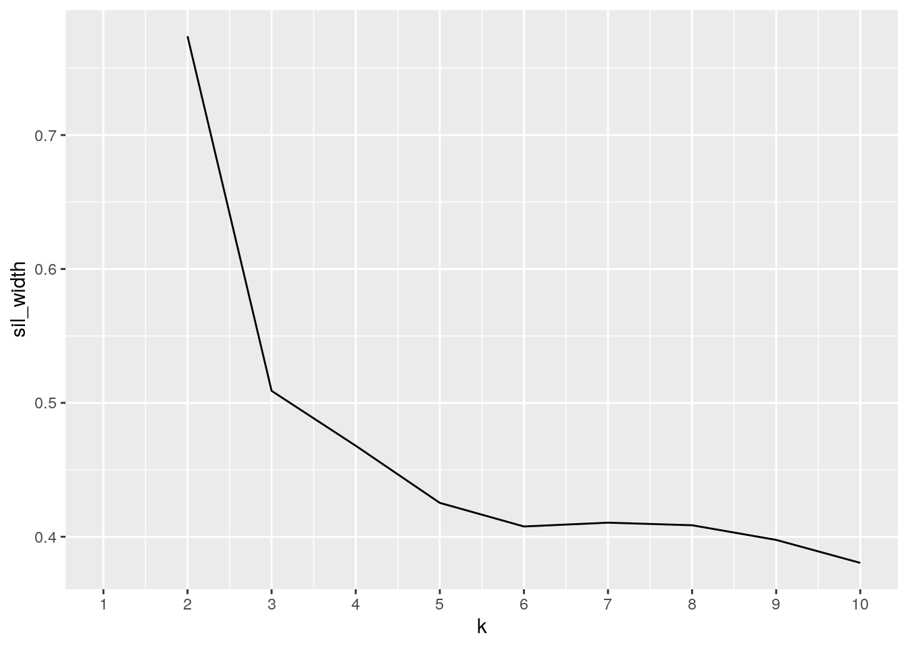
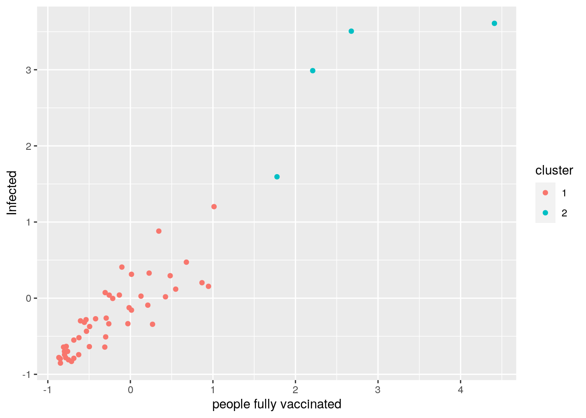
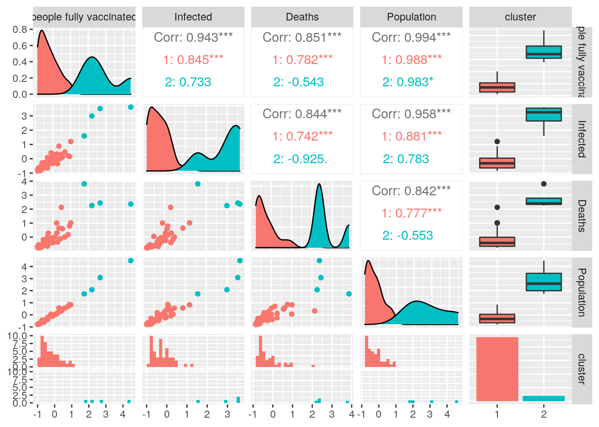
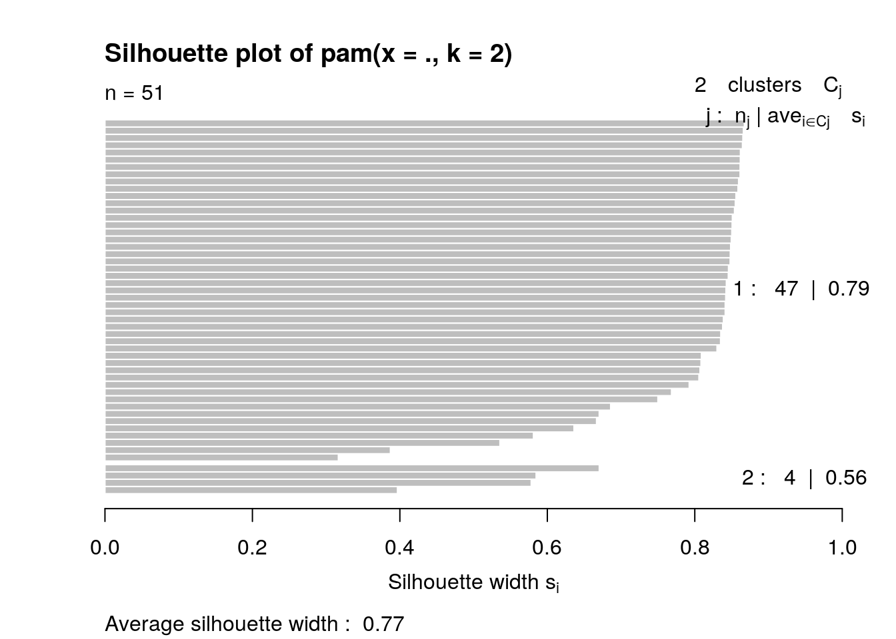

I chose two datasets from Kaggle, named covid and vaccinations. The covid dataset includes 51 observations of 9 variables (1 categorical and 8 numeric). The 51 observations are of the 50 states and the District of Columbia, with the 8 numerical variables representing the data of infected population, deaths as a result of COVID19, the state population, ICU beds, the average income of residents, GDP, percentage of unemployment, and health spending regarding COVID19 for each state. The vaccinations dataset also includes 1 categorical variable of states, but has 12 unique numerical variables distinct from the covid dataset. For each observation, total vaccinations, total vaccines distributed, people vaccinated, people fully vaccinated per hundred, total vaccinations per hundred, people fully vaccinated, people vaccinated per hundred, distributed per hundred, daily vaccinations raw, daily vaccinations, daily vaccinations per million, and share doses used are given.
These datasets were chosen because I wanted to observe each state’s current response to the COVID19 pandemic and how the actions in battling this pandemic can be influenced by economic stability. I expect potential associations between population and number of people infected, deaths, and number of ICU beds. I also expect states with higher health spending and greater population to have higher number of people fully vaccinated.
library(tidyverse)
library(cluster)
library(ggplot2)
covid <- read_csv("COVID19_state.csv")
vaccinations <- read_csv("us_state_vaccinations.csv")
head(covid)## # A tibble: 6 x 9
## State Infected Deaths Population `ICU Beds` Income GDP Unemployment
## <chr> <dbl> <dbl> <dbl> <dbl> <dbl> <dbl> <dbl>
## 1 Alas… 17057 84 734002 119 59687 73205 5.8
## 2 Alab… 194892 2973 4908621 1533 42334 45219 2.7
## 3 Arka… 113641 1985 3038999 732 42566 42454 3.5
## 4 Ariz… 248139 5982 7378494 1559 43650 48055 4.5
## 5 Cali… 930628 17672 39937489 7338 62586 74205 3.9
## 6 Colo… 109910 2105 5845526 1597 56846 63882 2.5
## # … with 1 more variable: `Health Spending` <dbl>head(vaccinations)## # A tibble: 6 x 13
## State `total vaccinat… `total distribu… `people vaccina… `people fully v…
## <chr> <dbl> <dbl> <dbl> <dbl>
## 1 Alab… 1363987 2080870 893767 10.7
## 2 Alas… 345987 499625 210932 18.6
## 3 Ariz… 2697523 3299085 1682456 13.1
## 4 Arka… 912660 1336570 602085 10.6
## 5 Cali… 13161027 17612260 8847129 11
## 6 Colo… 1987533 2536780 1262328 13.0
## # … with 8 more variables: `total vaccinations per hundred` <dbl>, `people
## # fully vaccinated` <dbl>, `people vaccinated per hundred` <dbl>,
## # `distributed per hundred` <dbl>, `daily vaccinations raw` <dbl>, `daily
## # vaccinations` <dbl>, `daily vaccinations per million` <dbl>, `share doses
## # used` <dbl>The datasets are already tidy so the tidying functions are used in #3 to rearrange the summary statistics.
# full join by State
joindata <- full_join(covid, vaccinations, by = c("State"))
head(joindata)## # A tibble: 6 x 21
## State Infected Deaths Population `ICU Beds` Income GDP Unemployment
## <chr> <dbl> <dbl> <dbl> <dbl> <dbl> <dbl> <dbl>
## 1 Alas… 17057 84 734002 119 59687 73205 5.8
## 2 Alab… 194892 2973 4908621 1533 42334 45219 2.7
## 3 Arka… 113641 1985 3038999 732 42566 42454 3.5
## 4 Ariz… 248139 5982 7378494 1559 43650 48055 4.5
## 5 Cali… 930628 17672 39937489 7338 62586 74205 3.9
## 6 Colo… 109910 2105 5845526 1597 56846 63882 2.5
## # … with 13 more variables: `Health Spending` <dbl>, `total
## # vaccinations` <dbl>, `total distributed` <dbl>, `people vaccinated` <dbl>,
## # `people fully vaccinated per hundred` <dbl>, `total vaccinations per
## # hundred` <dbl>, `people fully vaccinated` <dbl>, `people vaccinated per
## # hundred` <dbl>, `distributed per hundred` <dbl>, `daily vaccinations
## # raw` <dbl>, `daily vaccinations` <dbl>, `daily vaccinations per
## # million` <dbl>, `share doses used` <dbl>A full join was performed on the two datasets based on the common categorical variable ‘State’. This type of join was chosen to retain all rows and columns from each dataset. The covid and vaccinations datasets were fully joined to create joindata that now has 21 variables consisting of 1 categorical variable ‘State’ and 20 numerical variables that correspond to each state.
# mutate to make a new numeric variable of the percent of
# population that are fully vaccinated
joindata <- joindata %>% mutate(`vaccination percentage` = (`people fully vaccinated`/Population))
# mutate used to create a new categorical variable
joindata <- joindata %>% filter(`vaccination percentage` > 0) %>%
mutate(`vaccination percentage cat` = case_when(`vaccination percentage` <
0.11 ~ "low", 0.1 <= `vaccination percentage` & `vaccination percentage` <=
0.13 ~ "med", `vaccination percentage` > 0.13 ~ "high"))
# summary statistics alone
joindata %>% rename_all(function(x) str_replace(x, "_", "")) %>%
summarize_if(is.numeric, .funs = list(mean = mean, median = median,
sd = sd, var = var, min = min, max = max), na.rm = T) %>%
pivot_longer(contains("_")) %>% separate(name, sep = "_",
into = c("variable", "Stat")) %>% pivot_wider(names_from = "variable",
values_from = "value") %>% arrange(Stat)## # A tibble: 6 x 22
## Stat Infected Deaths Population `ICU Beds` Income GDP Unemployment
## <chr> <dbl> <dbl> <dbl> <dbl> <dbl> <dbl> <dbl>
## 1 max 9.31e 5 2.58e4 3.99e 7 7338 7.46e4 2.00e5 5.8
## 2 mean 1.80e 5 4.36e3 6.50e 6 1466. 5.16e4 6.15e4 3.52
## 3 medi… 1.21e 5 2.11e3 4.50e 6 1134 4.94e4 5.75e4 3.4
## 4 min 2.22e 3 5.80e1 5.67e 5 94 3.80e4 3.79e4 2.2
## 5 sd 2.08e 5 5.64e3 7.45e 6 1562. 8.22e3 2.26e4 0.831
## 6 var 4.33e10 3.18e7 5.55e13 2440233. 6.76e7 5.13e8 0.691
## # … with 14 more variables: `Health Spending` <dbl>, `total
## # vaccinations` <dbl>, `total distributed` <dbl>, `people vaccinated` <dbl>,
## # `people fully vaccinated per hundred` <dbl>, `total vaccinations per
## # hundred` <dbl>, `people fully vaccinated` <dbl>, `people vaccinated per
## # hundred` <dbl>, `distributed per hundred` <dbl>, `daily vaccinations
## # raw` <dbl>, `daily vaccinations` <dbl>, `daily vaccinations per
## # million` <dbl>, `share doses used` <dbl>, `vaccination percentage` <dbl># summary statistics grouped by categories of percent fully
# vaccinated
joindata %>% group_by(`vaccination percentage cat`) %>% select(is.numeric) %>%
summarize_all(.funs = list(mean = mean, median = median,
sd = sd, var = var, min = min, max = max), na.rm = T) %>%
pivot_longer(c(-1), values_to = "values", names_to = "stat") %>%
separate(stat, sep = "_", into = c("variable", "stat")) %>%
pivot_wider(names_from = "variable", values_from = "values") %>%
arrange(match(`vaccination percentage cat`, c("high", "med",
"low")))## # A tibble: 18 x 23
## `vaccination pe… stat Infected Deaths Population `ICU Beds` Income GDP
## <chr> <chr> <dbl> <dbl> <dbl> <dbl> <dbl> <dbl>
## 1 high mean 8.06e 4 2.37e3 2.86e 6 584. 5.42e4 6.12e4
## 2 high medi… 4.75e 4 5.56e2 1.87e 6 390 5.29e4 6.20e4
## 3 high sd 7.72e 4 4.24e3 2.49e 6 515. 9.34e3 1.15e4
## 4 high var 5.96e 9 1.80e7 6.22e12 265193. 8.73e7 1.32e8
## 5 high min 2.22e 3 5.80e1 5.67e 5 94 4.06e4 4.31e4
## 6 high max 2.45e 5 1.64e4 8.94e 6 1822 7.46e4 8.25e4
## 7 med mean 1.92e 5 5.13e3 7.28e 6 1708. 5.11e4 5.81e4
## 8 med medi… 1.63e 5 3.80e3 5.96e 6 1340. 4.97e4 5.66e4
## 9 med sd 1.76e 5 5.82e3 5.49e 6 1331. 7.63e3 1.12e4
## 10 med var 3.09e10 3.39e7 3.02e13 1771182. 5.82e7 1.24e8
## 11 med min 1.13e 4 4.83e2 9.83e 5 186 3.80e4 3.79e4
## 12 med max 8.01e 5 2.58e4 2.20e 7 5604 6.87e4 8.57e4
## 13 low mean 3.44e 5 6.27e3 1.17e 7 2587. 4.76e4 7.11e4
## 14 low medi… 1.95e 5 3.03e3 6.17e 6 1888 4.66e4 5.56e4
## 15 low sd 3.41e 5 6.93e3 1.36e 7 2502. 6.02e3 4.93e4
## 16 low var 1.16e11 4.81e7 1.85e14 6257903 3.62e7 2.43e9
## 17 low min 1.74e 4 6.14e2 7.21e 5 314 4.23e4 4.25e4
## 18 low max 9.31e 5 1.81e4 3.99e 7 7338 6.26e4 2.00e5
## # … with 15 more variables: Unemployment <dbl>, `Health Spending` <dbl>, `total
## # vaccinations` <dbl>, `total distributed` <dbl>, `people vaccinated` <dbl>,
## # `people fully vaccinated per hundred` <dbl>, `total vaccinations per
## # hundred` <dbl>, `people fully vaccinated` <dbl>, `people vaccinated per
## # hundred` <dbl>, `distributed per hundred` <dbl>, `daily vaccinations
## # raw` <dbl>, `daily vaccinations` <dbl>, `daily vaccinations per
## # million` <dbl>, `share doses used` <dbl>, `vaccination percentage` <dbl># correlation matrix on numeric variables with the irrelevant
# columns removed
joindata_num <- joindata %>% select(-`total vaccinations`, -`total distributed`,
-`people fully vaccinated per hundred`, -`total vaccinations per hundred`,
-`people vaccinated`, -`people vaccinated per hundred`, -`distributed per hundred`,
-`daily vaccinations raw`, -`daily vaccinations`, -`daily vaccinations per million`,
-`share doses used`) %>% column_to_rownames("State") %>%
select_if(is.numeric)
cor_data <- cor(joindata_num, use = "complete.obs")
cor_data## Infected Deaths Population ICU Beds
## Infected 1.00000000 0.84411972 0.95762317 0.96223191
## Deaths 0.84411972 1.00000000 0.84221432 0.84041605
## Population 0.95762317 0.84221432 1.00000000 0.97802178
## ICU Beds 0.96223191 0.84041605 0.97802178 1.00000000
## Income 0.11111793 0.37408599 0.21639765 0.13294379
## GDP -0.03117411 0.08675629 0.01814731 -0.01856389
## Unemployment -0.02168821 0.05985595 0.02180190 0.03178569
## Health Spending -0.27478827 -0.03731824 -0.21948640 -0.23537880
## people fully vaccinated 0.94342554 0.85080214 0.99401089 0.97392193
## vaccination percentage -0.40878755 -0.31096956 -0.36819912 -0.41065277
## Income GDP Unemployment Health Spending
## Infected 0.1111179 -0.03117411 -0.02168821 -0.27478827
## Deaths 0.3740860 0.08675629 0.05985595 -0.03731824
## Population 0.2163976 0.01814731 0.02180190 -0.21948640
## ICU Beds 0.1329438 -0.01856389 0.03178569 -0.23537880
## Income 1.0000000 0.36231680 -0.13873935 0.45613450
## GDP 0.3623168 1.00000000 0.21797313 0.58026877
## Unemployment -0.1387394 0.21797313 1.00000000 0.24742697
## Health Spending 0.4561345 0.58026877 0.24742697 1.00000000
## people fully vaccinated 0.2511538 0.01744166 0.03033527 -0.19895897
## vaccination percentage 0.2259226 -0.10986851 0.18121401 0.34349488
## people fully vaccinated vaccination percentage
## Infected 0.94342554 -0.4087875
## Deaths 0.85080214 -0.3109696
## Population 0.99401089 -0.3681991
## ICU Beds 0.97392193 -0.4106528
## Income 0.25115384 0.2259226
## GDP 0.01744166 -0.1098685
## Unemployment 0.03033527 0.1812140
## Health Spending -0.19895897 0.3434949
## people fully vaccinated 1.00000000 -0.3195833
## vaccination percentage -0.31958335 1.0000000The mutate function was initially used to create a new numeric variable that represents the percentage of people fully vaccinated in each state, as represented by the new variable ‘vaccination percentage’. The mutate and filter functions were also used to create a new categorical variable called ‘vaccination percentage cat’, which categorizes the percentage of people fully vaccinated in each state into high, med, and low. Using the summarize function, a table of the summary statistics was created to show data of the mean, median, sd, variance, min, and max of each numerical variable. This summary statistics table was tidied using pivot_longer, which ordered the column names and their variables into two columns that were then separated into separate columns for the variable names and summary statistics by using separate(). To shift the rows into columns and make the table wide, pivot_wider() was used, followed by arrange() to alphabetize the statistic column.
The summary statistics table was grouped by the ‘vaccination percentage cat’ variable by using group_by(), select(), and summarize(). To reshape the new table, pivot_longer(), separate(), pivot_wider(), and arrange() are used just like the previous overall summary statistics table. This new table shows the statistics of mean, median, sd, var, min, and max of each numerical variable for the high, med, and low groups. A correlation matrix is also created for all of the numeric variables in the data, and it shows that there are high correlations between ICU beds and infected, people fully vaccinated and population, infected and population, and ICU beds and population.
tidycor <- cor_data %>% as.data.frame %>% rownames_to_column("var1") %>%
pivot_longer(-1, names_to = "var2", values_to = "correlation")
tidycor## # A tibble: 100 x 3
## var1 var2 correlation
## <chr> <chr> <dbl>
## 1 Infected Infected 1
## 2 Infected Deaths 0.844
## 3 Infected Population 0.958
## 4 Infected ICU Beds 0.962
## 5 Infected Income 0.111
## 6 Infected GDP -0.0312
## 7 Infected Unemployment -0.0217
## 8 Infected Health Spending -0.275
## 9 Infected people fully vaccinated 0.943
## 10 Infected vaccination percentage -0.409
## # … with 90 more rows# correlation heatmap
tidycor %>% ggplot(aes(var1, var2, fill = correlation)) + geom_tile() +
scale_fill_gradient2(low = "seagreen3", mid = "azure", high = "pink1") +
geom_text(aes(label = round(correlation, 2)), color = "black",
size = 2.9) + theme(axis.text.x = element_text(angle = 90,
hjust = 1)) + coord_fixed() + ggtitle("Correlation Heatmap of Numeric Variables") A correlation heatmap was created to show high correlation in pink and negative correlation in green. The heatmap shows highest correlations between population, people fully vaccinated, infected, and ICU beds. There was also high correlation between people fully vaccinated and population, infected and population, and people fully vaccinated and infected. There was almost no correlation between percentage of people vaccinated and any other variable.
# barplot
joindata %>% ggplot(aes(x = State, fill = `vaccination percentage cat`)) +
geom_bar(aes(y = (`Health Spending`), position = "fill"),
stat = "summary", fun = mean) + theme(axis.text.x = element_text(angle = 45,
hjust = 1)) + scale_fill_manual("Vaccination", values = c(high = "slategray1",
med = "rosybrown1", low = "darkseagreen2")) + scale_y_continuous(n.breaks = 10) +
ggtitle("Health Spending in Each State") + xlab("State") +
ylab("Health Spending ($)") + coord_flip() A barplot was made that showed the average health spending per capita in each state, colored by ‘vaccination percentage cat’, a categorical variable. The high, medium, and low percentages of people fully vaccinated were represented by the colors slate gray, rosy brown, and dark sea green, respectively. This barplot illustrates an association, as seen by a higher percentage of people fully vaccinated in states with a higher health spending per capita. The states with medium percentage of people fully vaccinated generally have a medium health spending and the states with low percentage of people fully vaccinated have a medium/low health spending. The District of Columbia is odd in which it has a low vaccination percentage but the highest health spending. Ultimately, a positive correlation between health spending and the percentage of people vaccinated of each state can be supported by this plot.
# scatter plot
joindata %>% ggplot(aes(`ICU Beds`, Infected, color = Population)) +
geom_point(size = 2) + scale_y_log10() + scale_x_log10() +
scale_color_gradient(low = "darkslategray2", high = "darkorchid3") +
ggtitle("ICU Beds vs. Infected") + xlab("ICU Beds") + ylab("Infected") A scatterplot that plots the number of people infected vs. the number of ICU beds in a state is created in which the points are colored by the state population. Both the x and y axis of this plot were scaled by log10, and the result shows a strong positive correlation among the number of ICU beds, number of people infected, and state population. This illustrates that the greater the population in a state, the greater the number of ICU beds and the higher the number of people infected with COVID19.
# scale the variables first so that only numerical variables
# are chosen
clust_data <- joindata %>% select(`people fully vaccinated`,
Infected, Deaths, Population) %>% scale %>% as.data.frameTo cluster the data, the numeric variables of people fully vaccinated, infected, deaths, and population were selected for and scaled to be called clust_data.
# choose number of clusters (k)
sil_width <- vector()
for (i in 2:10) {
pam_fit <- pam(clust_data, k = i)
sil_width[i] <- pam_fit$silinfo$avg.width
}
# goodness of fit plot to show how many clusters to be used
ggplot() + geom_line(aes(x = 1:10, y = sil_width)) + scale_x_continuous(name = "k",
breaks = 1:10) PAM clustering silhouette method was used to determine the number of clusters. A goodness of fit plot was created to show that the greatest width is between 2 groups, so 2 clusters are used for my PAM analysis.
# PAM cluster analysis
pam_data <- clust_data %>% pam(2)
pam_data## Medoids:
## ID people fully vaccinated Infected Deaths Population
## [1,] 34 -0.4938578 -0.3725176 -0.4565362 -0.4505365
## [2,] 44 2.6763856 3.5065252 2.4370974 3.0837338
## Clustering vector:
## [1] 1 1 1 1 2 1 1 1 1 2 1 1 1 1 1 1 1 1 1 1 1 1 1 1 1 1 1 1 1 1 1 1 1 1 2 1 1 1
## [39] 1 1 1 1 1 2 1 1 1 1 1 1 1
## Objective function:
## build swap
## 0.9229594 0.9209634
##
## Available components:
## [1] "medoids" "id.med" "clustering" "objective" "isolation"
## [6] "clusinfo" "silinfo" "diss" "call" "data"A new data called pam_data is created by performing a PAM cluster analysis with 2 clusters.
# cluster visualization
clust_data <- clust_data %>% mutate(cluster = as.factor(pam_data$clustering))
ggplot(clust_data, aes(x = `people fully vaccinated`, y = Infected,
color = cluster)) + geom_point() A scatterplot of the cluster data is made to show people vaccinated vs. Infected. The clusters are colored to separate the 2 clusters and the plot shows a more numerous and concentrated first cluster in red, and a more sparse second cluster with less observations in dark cyan.
# visualization of the pairwise combinations
library(GGally)
ggpairs(clust_data, aes(color = cluster)) A visualization of the pairwise combinations that shows all of the 4 variables in 2 cluster groups are created.
# interpreting average silhouette width
pam_data$silinfo$avg.width## [1] 0.7738569plot(pam_data, which = 2) A silhouette plot of 2 clusters is created to show an average silhouette width of 0.77, indicating that a strong structure has been formed.
# interpret cluster
clust_data %>% mutate(cluster = pam_data$clustering) %>% group_by(cluster) %>%
rename_all(function(x) str_replace(x, "_", "")) %>% summarize_if(is.numeric,
.funs = list(mean = mean, median = median, sd = sd), na.rm = T) %>%
pivot_longer(contains("_")) %>% separate(name, sep = "_",
into = c("variable", "stat")) %>% pivot_wider(names_from = "variable",
values_from = "value") %>% arrange(stat)## # A tibble: 6 x 6
## cluster stat `people fully vaccinated` Infected Deaths Population
## <int> <chr> <dbl> <dbl> <dbl> <dbl>
## 1 1 mean -0.236 -0.249 -0.231 -0.242
## 2 2 mean 2.77 2.92 2.71 2.85
## 3 1 median -0.305 -0.317 -0.421 -0.341
## 4 2 median 2.44 3.25 2.40 2.58
## 5 1 sd 0.526 0.473 0.597 0.472
## 6 2 sd 1.15 0.928 0.734 1.23The summary statistics of mean, median, and sd for the four variables in both clusters are found.
PAM clustering was used on the four numeric variables of people fully vaccinated, Infected, Deaths, and Population. The PAM clustering silhouette showed that 2 clusters should be used for the analysis since there was a greatest width at k = 2. An analysis was performed and visualized to show how far the clusters are away from each other. This resulted in 2 separate clusters in which one is numerous and concentrated while the other is sparse with less observations. The analysis also resulted in an average silhouette width of 0.77, which can be interpreted as finding a strong structure. A summary statistics table of mean, median, and sd for the four variables was also created for each cluster. The mean and median of cluster 1 were negative while other statistics for both cluster 1 and cluster 2 remained positive. It can also be observed that cluster 1 has a much smaller standard deviation than cluster 2 does. Ultimately, this statistics table showed a consistency with the silhouette method and plots created above to visualize the 2 clusters.